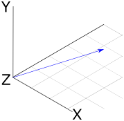
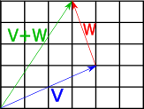

Vectors
1.1 Vectors
A vector is a quantity with a magnitude and a direction. We can imagine a vector as a pointed arrow, where the direction of the arrow signals the direction of the vector, and the length of the arrow represents magnitude.

Fig 1: A visual representation of a three-dimensional vector.
Vectors will give our renderer the mathematical foundation for modeling rays of light. Our renderer will represent vectors in terms of their co-ordinates from the origin. For example, the two-dimensional vector \(V=(1,1)\) can be visualized as a line starting at the origin (0,0) and extending to the point (4,2)

To represent vectors in our rust renderer, we will use two structs: Vector2d for the two-dimensional case, and Vector3d for the three-dimensional case. Because we may want to create vectors of both floating-point and integer types in our rendering application, it's useful to implement these as generic types, as follows:
#![allow(unused)] fn main() { pub struct Vector2d<T> { pub x: T, pub y: T } impl<T> Vector2d<T> { fn new(x: T, y: T) -> Self { Vector2d { x, y } } } pub struct Vector3d<T> { pub x: T, pub y: T, pub z: T } impl<T> Vector3d<T> { fn new(x: T, y: T, z: T) -> Self { Vector3d { x, y, z } } } }
For the remainder of these examples, I'll focus on the implementations for the Vector3d class, which are essentially the same as for Vector2d.
The components of vectors can be accessed as simple properties on the struct (vec.x, vec.y etc.). For some algorithms, it is also useful to be able to iterate over the components of vectors, so in addition to allowing access by property, we overload the index operator to allow vec[0], vec[1] etc. To overload operators in Rust, we import the relevant trait from std::ops and provide an impl statement, as below:
#![allow(unused)] fn main() { use std::ops::Index; impl<T> Index<usize> for Vector3d<T> { type Output = T; fn index(&self, index: usize) -> &Self::Output { match index { 0 => &self.x, 1 => &self.y, 2 => &self.z, _ => panic!("Index out of bounds") } } } }
Adding and subtracting vectors
To add two vectors we just add up the components item-by-by item. So if we have two three-dimensional vectors \(V\) and \(W\), their sum is a new vector where each component is the sum of the corresponding components of V and W:
\[ V=(1,3,5) \\ W=(2,4,6) \\ V+W=(Vx+Wx,Vy+Wy,Vz+Wz) \\ =(1+2,3+4,5+6) \\ =(3,7,11) \\ \]
The geometric interpretation of vector addition is equivalent to imagining the two vectors arranged to form a path, where the first vector starts at the origin, and the second vector starts where the first terminates. If we follow the second vector to its terminus, we find outselves at the co-ordinates representing the components of the new vector. The diagram below shows this for two vectors \(V=(4,2)\) and \(W=(−1,3)\), giving the expected result of \(V+W=(3,5)\)

Fig 2: Geometric interpretation of vector addition.
As one might expect, subtraction is also applied elementwise:
\[ V=(1,3,5) \\ W=(2,4,6) \\ V−W=(V_x−W_x,V_y−W_y,V_z−W_z) \\ =(1−2,3−4,5−6) \\ =(−1,−2,−1) \\ \] The geometric interpretation of vector subtraction is equivalent to imagining both vectors as paths originating at the origin, and finding the vector which connects the second operand to the first operand. The diagram below shows this for two vectors \(V=(5,2)\) and \(W=(3,5)\). Subtracting V from W gives us \(W−V=(−2,3)\).

Fig 3: Geometric interpretation of vector subtraction.
To implement these operations in Rust, we import the std::ops::Add and std::ops::Sub traits and provide implementations with impl statements. Things get a little tricky here, because the implementations will need to use the + and - operator on the vector components; however, because we are using generics, we are unable to guarantee that the components (which could be of any type) actually support these operators. To get around this, we can use the num::Num trait as a trait bound on our implementations, meaning that the Vector structs can only be created with numeric types:
#![allow(unused)] fn main() { use num::Num; impl<T:Num> Vector3d<T> { fn new(x: T, y: T, z: T) -> Self { Vector3d { x, y, z } } } }
The impl<T:Num> statement means that we are implementing the new constructor only for types which support numeric operations. With this in place, we can import the Add and Sub traits from the std::ops crate, and define our addition and subtraction operations:
#![allow(unused)] fn main() { use std::ops::{Index, Add, Sub}; impl <T:Num> Add for Vector3d<T> { type Output = Vector3d<T>; fn add(self, other: Self) -> Self::Output { Vector3d::new(self.x + other.x, self.y + other.y, self.z + other.z) } } impl <T:Num> Sub for Vector3d<T> { type Output = Vector3d<T>; fn sub(self, other: Self) -> Self::Output { Vector3d::new(self.x - other.x, self.y - other.y, self.z - other.z) } } }
Scalar multiplication and division
A vector can be multiplied and divided by a scalar value. To implement this, we just apply the multiplication/division operation element-wise to the vector.
So scalar multiplication will look like this:
\[ V=(1,3,5) \\ n=10 \\ Vn=(V_x+n,V_y+n,V_z+n) \\ =(1x10,3x10,5x10) \\ =(10,30,50) \\ \] ...and scalar division will look like this:
\[ V=(1,3,5) \\ n=2 \\ Vn=(V_xn,V_yn,V_zn) \\ =(12,32,52) \\ =(0.5,1.5,2.5) \\ \]
The geometric interpretation of these operations that they scale the vector's magnitude by the scalar degree. So the vector \(V=(2,2)\) (of length two) multipled by 2 will become \((4,4)\), which is of length 4; dividing this by 2 returns the original value of \(V\)

Fig 4: Geometric interpretation of multiplying a vector by a scalar.
In Rust code, this is pretty much the same as what we did for the Add and Sub operations -- we again import the relevant traits from the std::ops library, and provide implementations.
#![allow(unused)] fn main() { use std::ops::{Index, Add, Sub, Mul, Div}; impl <T:Num> Mul for Vector3d<T> { type Output = Vector3d<T>; fn mul(self, other: Self) -> Self::Output { Vector3d::new(self.x * other.x, self.y * other.y, self.z * other.z) } } impl <T:Num> Div for Vector3d<T> { type Output = Vector3d<T>; fn div(self, other: Self) -> Self::Output { Vector3d::new(self.x / other.x, self.y / other.y, self.z / other.z) } } }
One difference with this case is that we need to add an additional trait bound, the Copy trait -- this is because the multiplication and division operators move the value we are multiplying/dividing by. This means that when we do x * y, the arguments are pushed on to the stack, and can no-longer be used in the current scope. Adding the Copy trait ensures that these values can be copied.
#![allow(unused)] fn main() { // x and y are pushed on to the stack as part of the multiplication operation. // If they don't implement Copy, they cannot be re-used in this scope. let a = x * y; // If x and y implement Copy, Rust will copy them here. // Otherwise, the code will fail to compile. let b = x * z; }